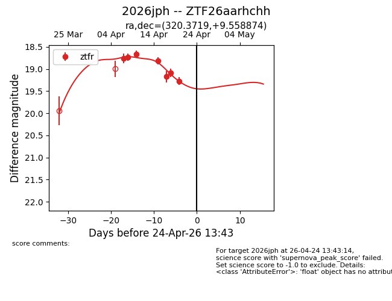
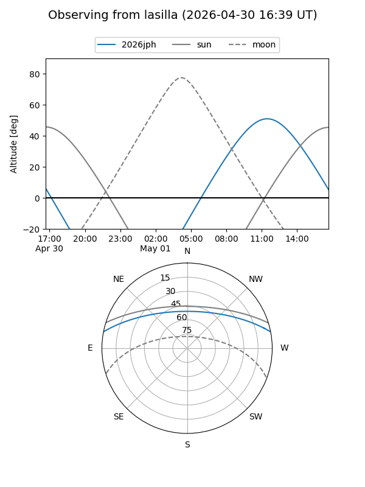
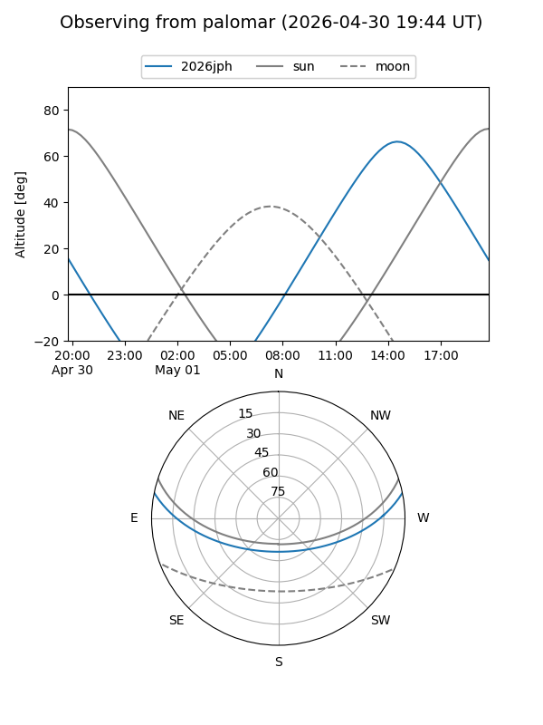
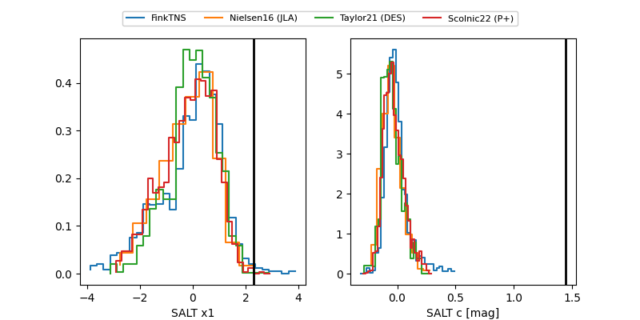

2026jph
Target 2026jph at 2026-04-24 13:44
Aliases and brokers:
FINK: link
Lasair: link
ALeRCE: link
TNS: link
YSE: link
alt names
ZTF26aarhchh (ztf,fink_ztf)
2026jph (tns,yse)
Coordinates:
equatorial (ra, dec) = 320.3719,+9.55887
equatorial (HMS+DMS) = 21:21:29.24,+09:33:31.95
galactic (l, b) = (61.2560,-27.30307)
Flags:
Photometry:
last ztfr=19.28
7 ztfr detections
Lightcurve

Visibility


Additional plots
